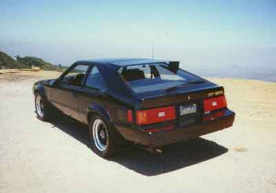

ENGINE
Valve
36.0mm, exhaust, SI
45.0mm, intake, SI
Cylinder Head Gasket, Metal
86 x 1.0mm, HKS
86 x 2.0mm, HKS
86 x 3.0mm, HKS
83 x 1.0mm, Trust
85 x 1.0mm, Trust
Air Filter
Super Power Flow, HKS
K & N Replacement
K & N Cone
Spark Plug Wire Set
NGK
TRD
Ignition
Jacobs Electronics Mileage Master Energy Pak
MSD 6A
MSD 6AL
Spark Plug
NGK Platinum
NGK standard
EXHAUST SYSTEM
HKS
HEADERS
D. Thorley, tri-y design
DRIVETRAIN
Centerforce I
Centerforce II
Centerforce Dual Friction
SUSPENSION
Tokico High Performance Shocks, set
Tokico Illumina 5 way Adjustable, set
KBD Sport Springs
Eibach Progressive Springs
Suspension Techniques Front Sway Bar 28mm
Suspension Techniques Rear Sway Bar 19mm
Toysport Strut Tower Bar, front
BRAKE COMPONENTS
Repco/PBR Metal Master Brake Pads, front
Cross Drilled Brake Rotors, pair (front)
(rear)
Steel Braided Brakeline, set
AERO ENHANCEMENT
TOYSPORT KAMINARI MITCOM
Front Air Dam
Side Skirt
Rear Valance
For any inquiries, please call 213-755-1177 or email us.